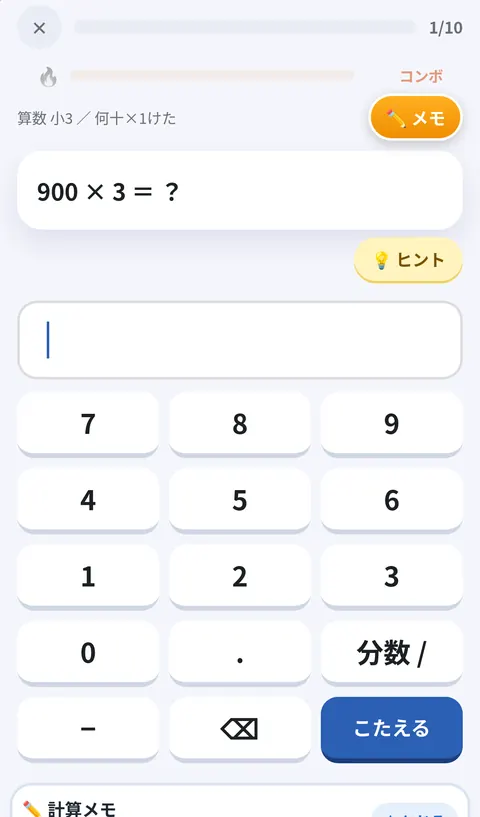

ほしまなびとは
ほしまなびは、小学生・中学生（小学1年〜中学3年）の子供が、スマートフォン・タブレット・パソコンのブラウザで勉強できる学習アプリです。無料で、広告や課金はありません。内容は学習指導要領（平成29年告示）にそって作っています。
📚 6教科・小1〜中3算数・数学、国語、理科、社会、英語、生活
✍️ 漢字 2,032字書き順の動き → なぞり書き → 書き取り
⭐ がんばりが見えるステップに合格すると⭐。⭐4こで、その日のゲームがひらきます
🔁 まちがえた問題ボックスまちがえた問題があとで自動で集まり、復習できます
学べる教科と学年
| 教科 | 学年 | 単元 | ステップ |
|---|---|---|---|
| 算数・数学 | 小1〜中3 | 107 | 1,322 |
| 国語 | 小1〜中3 | 96 | 794 |
| 生活 | 小1・小2 | 10 | 100 |
| 理科 | 小3〜中3 | 66 | 457 |
| 社会 | 小3〜中3 | 34 | 311 |
| 英語 | 小3〜中3 | 91 | 273 |
| 合計 | 404 | 3,257 |
1つのステップは数問〜10問ほどで、数分で終わります。問題はステップを開くたびに変わるので、同じステップを何度でも練習できます。図を使う問題、〇×、ならべかえ、カード合わせ、数字ボタンで答える計算など、いろいろな形で出題します。
アプリの画面





学習のしくみ
- ステップの問題で6割以上（切り上げ）正解すると⭐が1こ。同じステップの⭐は1日1回です。
- その日に⭐を4こ集めると、ゲームで遊べるようになります。勉強がさきで、ゲームはごほうびです。
- ⭐はへりません。集めた⭐でガチャをひき、なかまのキャラクターや着せかえ（見た目だけ）が手に入ります。
- まちがえた問題は「まちがえた問題ボックス」に入り、あとでまとめて復習できます。
- 英語は、録音した音声を聞いて答える問題があります。漢字は、指で書いた字をその場で判定します。
はじめ方
- このページの「無料ではじめる」から、ほしまなびを開きます（iPhone・iPad は Safari、Android は Chrome がおすすめです）。
- ブラウザの共有メニューから「ホーム画面に追加」をすると、アプリのように使えます。
- ログインしなくても、すぐに始められます（記録はその端末の中に保存されます）。
- Google アカウントかメールアドレスでログインすると、記録がクラウドに保存され、ほかの端末でも同じ記録で続けられます。
個人情報について
- ログインしないときは、記録はお使いの端末の中だけに保存されます。
- ログインしたときは、記録を Google の Firebase に保存します。記録を読み書きできるのは本人（と、アプリを良くするために閲覧する運営者）だけです。
- 広告、アクセス解析ツール、位置情報、連絡先、写真は使いません。お金の支払いの機能もありません。
- アカウントと記録は、マイページからいつでも削除できます。
くわしくは プライバシーポリシー をご覧ください。お子さまがアカウントを作るときは、保護者の方がいっしょにお読みください。
あわせて読む
ほかの使い方：海外に住む子どもの日本語の勉強に ・ 補習校の予習・復習に